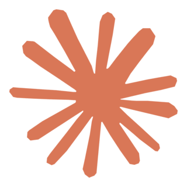
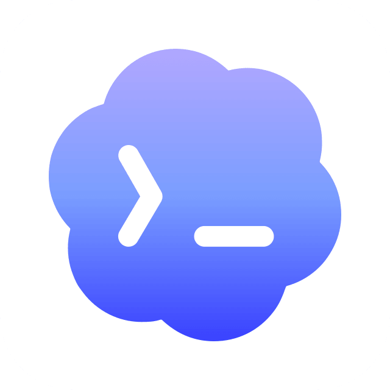

↑
理解变快
让 Claude 学习代码仓、issue、业务材料，输出业务知识扫盲和可视化呈现，把看不懂的背景变成能快速理解的结构。
AI 不是替我做设计，而是帮我把高门槛业务拆开，把模糊输入变成原型，把对齐和交付链路压短。

Claude
Codex从“只输出界面”变成“组织理解、推动对齐、辅助交付”。AI 负责把 0 到 60 的探索成本压低，设计师负责判断、取舍和质量。
让 Claude 学习代码仓、issue、业务材料，输出业务知识扫盲和可视化呈现，把看不懂的背景变成能快速理解的结构。
用 vibe coding 把模糊输入变成可点击原型，业务和研发围绕真实体验讨论。
确认字段和内容后，输出高保真 demo + 代码，前端拿到的是一份活的交互说明书。
我的协作方式不是让 AI 一步到位，而是让不同工具在合适环节接力：想清楚、跑起来、留依据、再由我判断是否成立。
先把 PRD、代码、issue 里的核心目标、用户场景、页面关系、流程状态和边界问题读出来。
先发散不同交互模式，比较列表、卡片、表单、分步流程、看板等结构，再收敛最适合的方案。
HTML 让页面先跑起来，MD 记录页面目标、模块字段、状态规则和设计逻辑，方便后续工具理解。
结合项目设计规范、组件模式和交互指南，把草稿整理成更接近真实产品的可交互页面。
我负责提出问题、判断取舍、检查体验完整性，并决定这个方案能不能进入下一轮对齐。
一类解决“看不懂业务”的问题，一类解决“说不清方案”的问题。两者合起来，就是从理解到交付的设计闭环。
业务内容本身太晦涩，有专业概念、历史约束、系统限制和隐性规则。AI 先帮我把这些内容拆开。
模糊需求不再停留在口头讨论，而是快速变成能点、能改、能对齐的体验对象。
这组图对应“理解业务”的前半段：先让 Claude 学习 issue，输出 MD 分析，再把分析结果转成可视化 HTML，帮助我快速建立业务和问题结构。
这组图对应“交付协作”的后半段：从模糊业务输入生成 PRD，再快速生成第一轮 demo，经过业务多轮对齐后，最终交付可运行 demo 和工程代码。
Claude 更像探索和原型搭档，Codex 更像落地和交付搭档。沉淀下来的 Design Skill 和交互指南，会反过来提升下一次 AI 输出质量。
读大上下文、扫盲业务知识、探索设计范式、生成 HTML 与 MD 草稿。
读需求、拆问题、结合规范生成可交互页面，并在仓库里持续修改。
提供真实代码、issue、历史讨论和研发侧一手语境。
沉淀提示词、设计规则、组件经验和可复用工作流。
每次 AI 协作不是一次性消耗，而是不断形成自己的设计知识库：把已经验证过的 demo、规则、组件和交互判断沉淀成 skill 与指南，让下一次 AI 生成能继承这些标准。
基于交互 demo 反向沉淀设计原则、设计变量、布局规则和交付标准，让 AI 后续生成页面时有稳定的设计约束。
从真实业务内容中抽离 Agent 对话、执行过程、控制安全、结果沉淀等交互规则，变成可复用的组件和状态机指南。
把已验证的 demo、组件模式、可视化表达方式留下，作为下一轮生成的参考。
把页面中已经验证过的视觉规则、密度、颜色、字号、间距、状态和组件倾向沉淀成 AI 可复用的设计能力。
把 Agent 对话流拆成能力地图、组件层级、状态机和消息数据模型，帮助后续类似场景更快落到可执行设计。